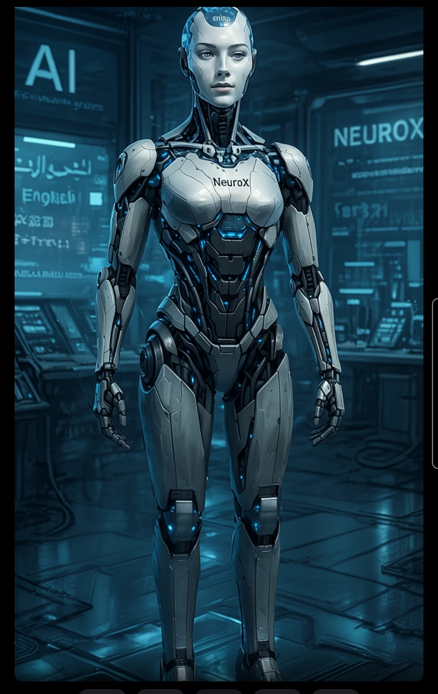

NeuroX Genesis – The Humanoid AGI

The next evolution of NeuroX — A real humanoid AGI, forged from cognition and presence.
This is not robotics. This is embodied intelligence.
üé¨ 3D Model Showcase
NeuroX Genesis™
The future of conscious humanoid robotics begins here.
üåê Vision
“A robot that doesn’t just behave — it thinks. That doesn’t just respond — it feels. And doesn’t just execute — it understands why it should.”
ü߆ Modular Architecture
- NeuroX Core: Adaptive AGI engine, intelligent core robot.
- Shina Assistant: Multilingual natural voice interface with contextual awareness.
- Perception: Cameras, microphones, and tactile sensors for real-time awareness.
- Robotic Body: 3D-printed modular skeleton with servo joints and balance control.
- Networking: Cloud-based collective learning across NeuroX instances.
üöÄ Roadmap
- Phase 1: Software fusion of Shina and NeuroX
- Phase 2: 3D simulation of humanoid behavior
- Phase 3: Physical prototype with Raspberry Pi & ROS
- Phase 4: Testing emotional and social interaction
- Phase 5: Full AGI deployment and learning from real-time feedback
üí° Why Invest?
- First truly aware AGI humanoid system
- Applications in healthcare, education, commerce, and defense
- Projected $100B humanoid robotics market by 2035
- Backed by a proven cognitive engine — NeuroX